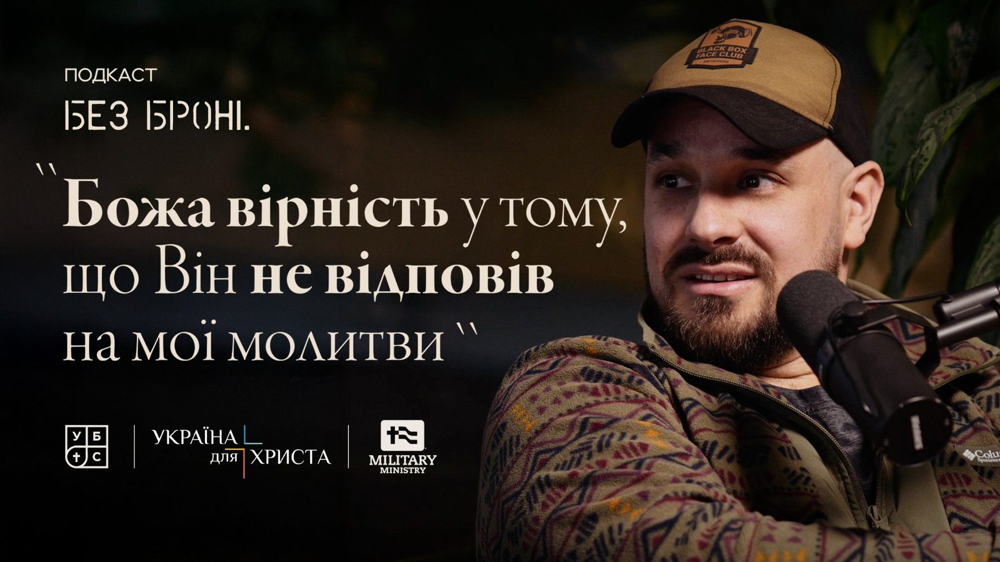
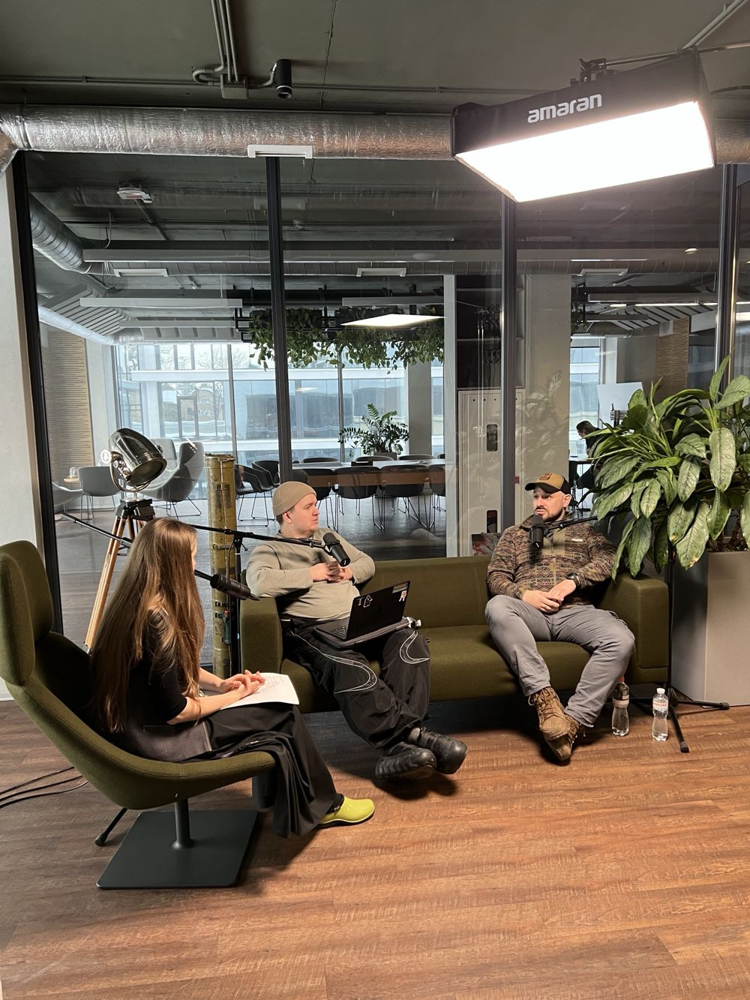
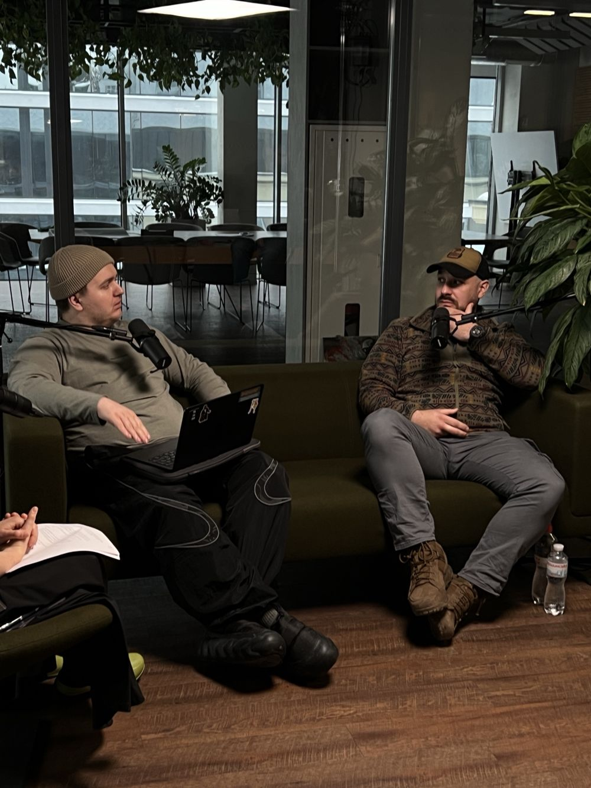
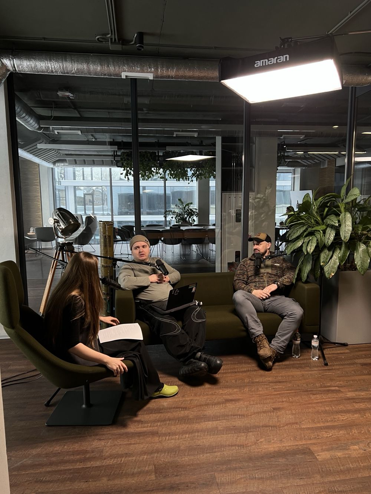

Сезон 1 Епізод 1 ·
Роман Пікулік: «Хочу, щоб війна в моїй сім'ї закінчилась на мені»

Роман — чоловік, батько, християнин і ветеран. Воював у піхоті, після поранення служив на адміністративних посадах. Розмова про віру на війні, повернення в церкву й цивільне життя, про чесність у питаннях мобілізації і про Бога, який вірний навіть тоді, коли не відповідає на наші молитви.
Навіщо такі розмови?
Надя: Ромо, коли ми знайомилися, я дивилася твій Instagram, і мені дуже сподобалося. Я навіть зробила скрін, щоб люди запам'ятали не все те складне, що сказав Саша, а трошки простіше. У тебе в Instagram написано: «Чоловік, перше — батько, християнин і ветеран». Думаю, саме так люди тебе й запам'ятають.
Наш спільний знайомий Юра, коли дізнався, що ти прийдеш до нас на розмову, був відверто здивований. Сказав, що ти людина непублічна. Тож скажи, будь ласка: попри твою непублічність, у чому ти бачиш цінність таких розмов, як сьогоднішня? І чи є насправді запит на чесні розмови без броні — про людину, війну і віру?
Роман: Спробую відповідати по хронології. Думаю, запит точно є. Я б навіть сказав, що він нам потрібен. Мені особисто потрібен: просто розказати, вилити серце, самому сформувати свої думки, своє бачення. Думаю, багато ветеранів готові говорити чесно. Є цілий кластер непублічних людей — я завжди топитиму за піхоту, — які мають свій особливий досвід і мають що сказати суспільству. Може, навіть на підсвідомому рівні вони шукають можливості розказати про себе, про свій досвід, про інших людей.
А якщо підсумувати те, що говорив Саша: мені просто пощастило вижити. Так склалися обставини. Я вдячний своїм лідерам і командирам, які в якийсь момент мене зберегли, не відпустили, постукали по голові й зупинили. Тому дружина має чоловіка, а діти мають батька.
Олександр: Я теж погоджуюся, що це дуже важливо обговорювати. Бо зазвичай ми від цього відсторонюємося: богослів'я — це тільки в церкві або в семінарії, а те, що відбувається у світі, стосується тільки світу. Хотілося б показувати практично, як християни і християнство загалом працюють у цьому світі, як Христос є серед цього і як Він нас підтримує. І, як підкреслив Рома, завдяки цьому частково ми і […]
Досвід служби
Надя: […] тих, хто більше хапнув горя, більше хапнув цієї війни. Тобто це радше в силу твого військового досвіду?
Роман: Так. Я не хочу називати себе якимось професійним піхотинцем — не хочу знецінювати хлопців. Якщо я беру на себе таке позиціонування, як «хороший піхотинець», то як тоді назвати їх? Я не хочу знецінювати їхній унікальний досвід. До того ж ті, хто служив зі мною, знають: я був у піхоті, потім отримав поранення, ще трішки побігав із піхотою, а далі вже більше був на адміністративних посадах.
Християнин на війні
Надя: Окей. Питання: наскільки твоє християнство — те, що в Instagram у тебе написано «християнин», а нижче «ветеран», — було визначальним у досвіді твоєї служби? Рома на війні, Рома-християнин — що це для тебе означало?
Роман: Точно було важливо. Один із таких моментів — якщо повернутися до 14-го року: чому я йшов із чистою совістю. Бо я хотів служити тим хлопцям […]
Мені просто розказують: «Ти знаєш, так прикро, що вони так сміються». А для мене це так приємно, для мене це похвала, коли інші з когось сміються: «Ти попав умовно до церкви — до Пікуліка». Таку аналогію з церквою проводили. Думаю, люди це бачили. І я себе так позиціонував: я інший, я не кадровий військовий, у мене трошки інший підхід, і я на своєму місці. Я старався більше послужити людям і, по можливості, врятувати.
Надя: Сашо, на якийсь момент усе має піти не за планом, тож попереджаю: зараз ми змінюємо порядок запитань. Ромо, Саша сказав про такі класичні ознаки довоєнних — а може, й не лише довоєнних — правильних християн: не п'є, не курить, не матюкається. Чи можна на війні лишатися «стерильним» християнином, який не п'є, не курить, не матюкається? Чи це взагалі реально?
Роман: Думаю, реально. У мене це не вийшло, але я думаю, що це реально. Наприклад, коли хлопці, які […]


Відповідальність командира
Роман: […] тоді вже можна говорити про якусь зміну посади чи напрямку роботи. Скільки ми брали піхотинців… Думаю, це одна з важливих цінностей, особливо піхотного батальйону: ти маєш пройти піхоту, і тоді краще розумієш важливість усього іншого. Звичайно, піхотинець зразка 22-го, 23-го і 25-го року — це три різні служби. Але все одно є базові принципи.
Тому я хотів, щоб людина сама брала на себе відповідальність за те, куди вона йде. Щоб потім рідні — дружини, батьки — не сказали мені: «Чому ти не подбав, чому не зберіг мого чоловіка чи сина?» Я не хотів брати на себе цю відповідальність.
Церква, благодать і очікування
Олександр: Тоді, випливаючи з цього, теж цікаве питання. Чи не здається тобі, що церква зараз більш толерантна до людей, які дають хабарі, щоб ухилитися від служби, ніж до тих, хто воює і в кого при цьому може проскакувати якась лайка?
Роман: Я розумію так: оскільки я очікую благодаті до себе, я хочу давати благодать і іншим людям, і іншим церквам. Взагалі ця війна, можна сказати, підкосила багатьох. Розкрилися рани, багато гною вийшло назовні. І я думаю, це добре — про такі речі треба говорити. Чи було наше суспільство таким стерильним до війни? Точно ні. Просто ми менше про це говорили.
Надя: Тобто в тебе не закрадається думка: «Мені всі винні, бо я пожертвував своїм часом, сім'єю, усім цим — тож дайте мені більше благодаті»?
Роман: Може, деколи й закрадається. Але вона точно не конструктивна, вона мені не допомагає. Мені більше допомагає брати відповідальність за себе, за свої вчинки. Якщо від когось більше очікувати — це нікому не допоможе. І по факту ті очікування, які я маю до людей чи до оточення, ніколи не справдяться в тій мірі, в якій я очікую. Завжди є шанс, що щось мені не додали, місія щось не так зрозуміла, не так дала благодаті. Я більше про інше: окей, у мене є свій досвід — як я можу ним послужити, що можу віддати.
Надя: У церкву не вриваєшся з криками: «Я воював»?
Роман: «Я воював, я в танку горів» — ні. Я колись говорив у місії, коли директор місії приїжджав на Схід (за що я дуже вдячний): «Я просто хочу прийти на якусь конференцію в капюшоні, сісти, щоб мене ніхто не чіпав, і просто сидіти й слухати». Оце для мене ідеальний момент повернення в сім'ю місії. На конференції я трошки дивакуватий чи контужений, але сиджу і нікого не чіпаю.
Останній раз, може, три тижні тому, я був у церкві свого друга в Дублянах. Прийшов, сів у кутку ззаду. Мені кажуть: «Давай наперед». А я: «Ні, оце ідеальне місце — дві стіни за спиною». Я б узагалі повісив там табличку для ветеранів: «Бабусі, не займайте, це наше місце». Бабусі — це мій біль. Але місця там було багато, тож жодна бабуся через мене не постраждала.
Задня лавка — це не ізоляція
Олександр: Бачиш, командир випхав простого солдата на відкриту місцевість, а сам заховався серед зелені.
Надя: Це не Ромина ідея була, сорі, тут я захищу Романа. І все-таки я копну глибше, бо до кінця не розумію, що ти кажеш. Чому ховатися? Чому на задню лавку? Можливо, непорозумінь стільки, що ти навіть не хочеш входити в цей діалог? Чи просто зараз не маєш на нього ресурсу й сил? Що означає твоє «я буду в капюшоні на конференції», «на задній лавці»?
Мені як людині, яка не воювала і яка хотіла б, щоб ми були просто хорошими спільнотами, цікаво: ось я побачила — сидить чувак у капюшоні, і я знаю, що це Роман, який воював. Що я як християнка, яка хоче бути доброю, маю зробити — не чіпати тебе чи заговорити з тобою? Що означає ця твоя позиція для мене і для всіх людей?
Роман: Гарне запитання. Думаю, позиція означає: «Дайте мені трошки більше часу. Не треба пушити. Дайте мені тут адаптуватися, прийти в гармонію з собою, зрозуміти, хто я, хто мої діти, яких я не бачив кілька років». Тобто моя позиція про задню лавочку — це не про ізоляцію. Це більше про приватний простір і про час.
Я готовий більше говорити про ці теми. Просто давайте, щоб був адекватний, гарний, безпечний простір, де можна про них поговорити. Якщо говорити про хмарки, погоду, котиків, машини — то можна й не говорити. А якщо говорити про війну — то давайте говорити глибоко, не поверхнево.
Надя: Сашо, можна я поставлю уточнювальне питання? Про котиків уникнемо. Що для тебе означає говорити про війну інакше? Бо ми тут цілий подкаст хочемо робити про людину, віру і війну.
Роман: Не поверхнево. Не так: «У нас 20 хвилин обіду, треба зайняти ефір, давайте швидко поговоримо про якісь легкі питання» — і всі побігли далі. А простір… Я не те що хочу собі набити ціну. Візьмімо не Романа, а будь-яку людину, яка є членом церкви чи ні, але має якусь спільноту. Моя ідея така: «Друже, в тебе унікальний досвід, ти для нас цінний, ми хочемо тебе більше почути. Дозволь, ми зробимо якесь інтерв'ю чи зустріч, де тобі буде комфортно, і ми зможемо поставити запитання».
Зазвичай у людей теж багато запитань, навіть таких: «А можна приходити вітатися?» Коректно питати: «Як ти себе почуваєш?» І для людини це цінність — що її досвід цінують і її хочуть почути.
Тобто моя позиція про задню лавочку — це не про ізоляцію. Це більше про приватний простір і про час.
Чужі люди після війни
Роман: […] шлях служби — їм я довіряю і готовий більше впускати їх у своє життя. А тих людей, з якими ми навіть не переписувалися ці чотири роки… Я не скажу, що готовий одразу їх обіймати, бо ми чужі люди.
Я став чужою людиною для своєї дружини. Три роки на війні — я повернувся іншою людиною, і дружина стала іншою людиною. Що вже говорити про людину, з якою ми просто бачилися. Очікувати, що я приїхав такий самий і в нас одразу відновляться стосунки зразка січня 22-го, яких не було ці три-чотири роки, — для мене це важко.
Тому важливо підтримувати ветерана і його сім'ю ще тоді, коли він служить. Бути з цією людиною на різних позиціях, навіть просто запитати. Хтось каже: «Я не пишу, бо думаю, що ти там виконуєш завдання і мій дзвінок завадить». Ніхто так не працює. Якщо я виконую завдання […]
Тригери в цивільному житті
Олександр: […] саме повернення до цивільного життя. Чи є речі, які тебе зараз найбільше дратують у цивільному? Я понакидаю тобі тригерні моменти: «молитовний фронт», «економічний фронт», «культурний фронт». Або коли до тебе підходять: «А ми за тебе молилися — не писали, але молилися».
Надя: Можна я уточню: це був твій перелік тригерів?
Олександр: Для мене «молитовний фронт» — це дуже сильно. Бувають моменти, коли пояснюють, що це на рівні важливості з тим, як ти воюєш: «Нам так само важко».
Надя: Може, ще якийсь список тригерів? Я його не знаю — це ваш список, щоб роздратувати більше. Я тут у ролі тієї, хто тригерить.
Олександр: Якщо підсумувати, питання було таке: чи є щось, що тебе зараз дратує?
Роман: Все! А якщо точно — мені не вистачає… Я не маю можливості їздити на авто так, як їздив в армії. Мені бракує тих емоцій, без світлофорів, оцих задньопривідних пікапів. Немає того, що зброя завжди в доступності: використовуєш ти її за призначенням чи ні, бавишся з нею вечорами — але вона є. Цього мені теж бракує.
Тригери, безумовно, є. Але, мабуть, такий мій досвід: я стараюся бути вдячним навіть тим людям. Зрозуміло, на певні речі в мене своя думка. Але я вдячний, бо є люди, які просто забили болт: не молилися, не допомагали ніяк. І я не можу сказати, що це все нічого не варте. Є багато людей, яких я ніколи не бачив: ми зустрілися, а людина роками молилася за тебе і твою сім'ю. Я вдячний, бо це був їхній внесок. Особливо коли люди за океаном, в іншому кінці світу, об'єктивно могли палець об палець не вдарити і не переживати за Україну, за всю цю війну.
Якби в нас не було цієї спільноти… Мені просто шкода людей, які бояться довірити своє життя і життя своїх дітей і дружин Богу, який може про них подбати — зокрема через спільноту.
А питання, яке мене дуже часто тригерить, таке. Чому сотні, якщо не тисячі невіруючих людей, які не мають церковної спільноти і всіх цих можливостей, ідуть і готові покласти своє життя — про мотиви можемо колись поговорити окремо — ідуть у Сили оборони і Збройні сили України? А віруючі, які зазвичай мають спільноту, гарне здоров'я, роботу, міцні стосунки в сім'ї, — не йдуть служити. Хоча по факту той, хто йде, нічого не має і все втрачає. А ми декларуємо, що маємо вічне життя, що наш дім на небі, — багато-багато правильних слів. І тут маємо непогане життя. І ми хочемо, щоб хтось інший нас захищав і хтось інший платив цю ціну.
Олександр: Але ти сказав: наш дім на небі. То який сенс захищати його тут?
Роман: Тим паче, якщо дім на небі, — то йди швидким ліфтом на небо, і всі виграють. Якщо ти кажеш, що тут тимчасовий прихисток і тимчасове життя, — чого його боятися, якщо ти довіряєш? У якийсь момент я собі це проголошував. Я розумію, що Бог може краще подбати: Він точно не залишить моїх дітей і мою дружину, Він подбає про них краще, ніж я, бо я грішний, лінивий, зі своїми моментами. А Бог вірний. То чого мені боятися? Я хочу, щоб мої діти росли з батьком, а дружина — з чоловіком. Але це давало мені свободу.
Звичайно, потім син мені якось сказав: «Я думав, ти помер».
Надя: Скільки років синові?
Роман: У березні буде п'ять. Коли я в 22-му році їхав на війну, йому було 11 місяців […]

Чи тягне назад на війну?
Роман: […] Чи тягне мене назад на війну? На хлопців точно тягне. Мене нудить від певної совкової системи, від звітів — я все це ненавиджу. Але я точно скучаю за хлопцями, за адреналіном, за запахом мастила — за всім цим. Зараз я сприймаю це так, що просто маю паузу від армії. А потім треба буде знову заходити.
І я хотів би, щоб війна в моїй сім'ї закінчилася на мені. Не хочу, щоб мої діти мали такий досвід. Для мене це теж одна з важливих причин.
Я захоплююся старшими чоловіками. У моїй службі було кілька моментів, коли чоловік служить, а в нього вже син студентського віку. І він каже: «Володимировичу, якщо мій син піде в армію, я перший іду в піхоту на позицію. Я не хочу, щоб він служив. Я візьму це на себе, я вже тут залишуся — щоб мій син мав квиток у життя». Для мене це дуже гарний приклад батьківської любові. Може, батько мене так виховав, що діти мають ховати батьків, а не батьки дітей. Я навіть уявити не можу того болю, який переживають батьки, що ховають своїх дітей.
Тож це один із моментів, коли я думаю про війну. Звичайно, ще й закрити якісь свої внутрішні гештальти, незавершені справи в армії. Але я не хочу, щоб мої діти, хлопці, служили в армії. Тим паче дочка.
Надя: Чи віриш ти, що можна закрити ці питання? Чи є межа, де Роман скаже: «Все, я закінчив»?
Роман: Об'єктивно — напевно, я їх ніколи не закрию. Але можна наблизитися. Я спілкувався зі своїм другом, психіатром і психотерапевтом. Він каже: «Ромо, у мене були клієнти, які говорили так само. Вони мали той досвід, про який ти мрієш, і все одно думають, що недостатньо горя хапнули, хочуть ще спробувати». І ця логіка є. Якщо по-хлопськи — я не навоювався. Хтось каже: «Тебе заклинило» чи «тебе запаяло».
Мені підходить такий стан, і я не хочу, щоб щось там перепаювали. Для мене це нормальний стан. Хтось називає це моєю бульбашкою. Для мене це не бульбашка — це моє реальне життя. Не скажу, що мені в ньому завжди комфортно, але переходити з нього я не хочу. Для мене стан цивільного — це точно смерть.
Олександр: Я погоджуюся. Мене теж питали: коли це завершиться? І чи було б достатньо, якби я загинув на війні? Я б вважав, що загинув занадто рано або недостатньо довоював.
Роман: Є така фраза: кінець війни побачать тільки мертві. Її по-різному інтерпретують, але логіка в ній є. Якщо ти пройшов війну, то навіть коли бойові дії закінчаться, всередині тебе війна не закінчиться. Треба вчитися з цим жити.
Надя: Тобто зараз ти перейшов на нову стадію внутрішньої війни?
Роман: Нову стадію, я б сказав… Якщо по тих стадіях, як рахували, — четверта стадія і підготовка до п'ятої.
Надя: Ви почали говорити про своє, і я не знаю, що в цьому контексті доречно вас спитати.
Роман: Усе можна питати.
Надя: Тоді давайте говорити про Бога. Коли я знайомилася з Сашею, то влаштувала йому пробне інтерв'ю без камер. Це було класно, бо без камер можна поставити багато дурних питань і не думати про формулювання. Я питала, наприклад: «Сашо, що ти зараз думаєш про силу молитви?» Він кілька разів перепитував. А я хотіла дізнатися, як він тепер це для себе розуміє і чи вірить у силу молитви. Тож давай поговоримо про твій досвід Бога.
І я хотів би, щоб війна в моїй сім'ї закінчилася на мені.
Бог, який вірний
Роман: […] Під час війни я розумів: Бог суверенний. У мене до Нього немає ні претензій, ні питань, чому Ти це допустив чи чому дозволив, щоб ця людина загинула. Я просто розумів, що Бог суверенний і вірний.
Якщо й були питання, які я ставив Богу, то такі: чому Ти такий довготерпеливий до мене? Чому Ти мене ще не вбив, не покарав? Чому мої діти досі живі? Скільки ще в Тебе… Як може бути так багато милості і до мене, і до інших людей?
Що означає, що Бог вірний і милостивий? Для мене Він вірний у тому, що навіть коли я невірний, Він свою частину робить. І це не залежить від мене. Божа любов, Його суверенітет не залежать ні від моїх вчинків, ні від чийогось настрою.
А ще Бог вірний у тому, що не відповів на мої молитви, коли я просив Його просто забрати мене: «Боже, я вже не вигрібаю. Напевно, це буде гарний момент. Діти запам'ятають батька — або не запам'ятають. Залишаться якісь нормальні фотографії, батько буде героєм». У тому й Божа вірність, що Він не відповів на мої прохання швидше піти до Нього. Бо для мене це був би легший шлях — позбутися всього і передати відповідальність заступникові: хай хтось інший вигрібає.
Надя: «Маєш нормальні фотографії»… Я думала, зараз буде серйозне богословське… вибачте.
Роман: Ну, а що — нормальні фотографії. Найкращі, топові фотографії пропали на флешці в Попасній.
Надя: Я не дам тобі відгородитися гумором. Я запам'ятала з нашої розмови, що це твоя захисна реакція. Ти говорив схожі речі в інтерв'ю з Андрієм Гуцуляком: ви витягували пораненого, і ти теж подумав: «О, гарний момент, щоб загинути героїчно і благородно — ще й тіло витягнуть».
Чесність замість лазівок
Надя: Окей, Ромо. Чи є щось, що відшарувалося з твого християнського життя? Якісь практики, які виявилися неробочими, неживими, і ти їх відклав убік?
Роман: Я завжди топлю за те, що треба бути чесним — навіть у мотивах. Називати речі своїми іменами. Це мій тригер, через який я іноді бурчу в розмовах із Сашею та іншими ветеранами: чому християни не можуть чесно сказати «я не хочу йти в армію, я боюся»? А починають крутити, шукати лазівки, чіпляти на себе якісь шильдики, шеврони, займатися якимось служінням. Благе служіння, гарне — це все добре. Але з метою, щоб їх не призвали в армію.
Мені нормально, якщо людина чесно скаже: «Я займаюся цим служінням, бо воно дає мені певні привілеї: працівник ТЦК мене відпустить чи скаже — який ти молодець, такою важливою справою займаєшся, продовжуй». І це важлива справа. Але я поважаю тих, хто чесний. Для мене було цінно, коли людина каже: «Я боюся. Я реально не хочу покидати свою дружину, сім'ю. Я боюся, що в армії в мене заберуть свободу». Мені було приємно побачити на Заході, що є люди, які можуть чесно це сказати. А є люди, які маневрують.
Напевно, я й сам у багатьох моментах виляю: прикриваю благими цінностями, служінням якісь свої мотиви. Але я за чесність, особливо в питаннях мобілізації і служби в армії. Люди думають, що втратять свободу. А я кажу навпаки: людина отримає свободу, пішовши в армію, — чисту совість перед собою, майбутніми дітьми, державою. Мені дуже шкода чоловіка, який три-чотири роки живе в страху. Тож можна хапнути свободу. Можна взагалі хапнути свободу і одразу піти до Бога. А можна ще трошки тут послужити.
Олександр: Мені здається, тут питання в тому, що не всі хочуть це чути й обговорювати. Я дуже сподіваюся, що завдяки цьому подкасту ми збережемо ці розмови. І ті, для кого це стане актуальним, підійдуть до ветеранів і військових, будуть спілкуватися й запитувати. Як сказав Роман: потрібен час, а потім він відкритий говорити. Мені здається, саме для цього ми це і робимо. Хотілося б, щоб з'явилося бажання чути, говорити і щось змінювати.
Бліц
Надя: Бліц! Сашо, ти хочеш сам чи по черзі?
Олександр: Можу сам.
Роман: Від мене очікуються розгорнуті відповіді? Чи «так», «ні», «не знаю»?
Олександр: «Так» чи «ні» і коротко. Якщо хочеш — можеш не розкривати. Перше питання: смерть — це страшно чи просто перехід?
Роман: «Так» чи «ні» тут не працює. Це страшно. Думаю, це милість, яку ще треба гарно заслужити.
Олександр: Що складніше: вижити під обстрілом чи пояснити дітям, чому тато знову йде?
Роман: Мої діти не розуміли. Коли я їхав, їм було нормально — вони були менші. Тому я їм не пояснюю. Вони не знають, вони не хапнули війни. І це добре.
Олександр: За чим ти найбільше сумуєш із воєнних часів?
Роман: За мужиками, за командою, за зброєю, за пальним, за двіжухою на пікапах.
Олександр: Найбільший міф цивільних про військових?
Роман: Що всі одразу загинуть і всі потраплять у піхоту.
Олександр: Ти плакав на фронті?
Роман: Так. І сьогодні плакав.
Олександр: Яка книга Біблії стала для тебе найближчою під час війни?
Роман: Приповісті. Там можна було коротко вхопити те, що треба. Трішки почитав — і воно до тебе доходило, про життя. Не треба було розсусолювати про історичний контекст. Це все важливо, але там…
Олександр: На війні легше бути віруючим чи невіруючим?
Роман: Думаю, віруючим завжди легше. У тебе є Дух Святий, який працює з тобою. У більшості випадків ти у виграшному варіанті: навіть якщо щось станеться і ти загинеш — ти все одно у виграші. А якщо виживеш — ти з Богом.
Олександр: Хто для тебе Бог сьогодні: суддя, друг, командувач чи хтось інший?
Роман: Я хочу — як Батько, до якого повертається блудний син.
Олександр: Ми починали з питання, чи має ця розмова сенс. Чи мала вона сенс?
Роман: Точно. Я дуже радий, що мав цю можливість. Дякую всім — і команді, і слухачам. Для мене це було важливо.
Надя: Може, ще якісь мудрі слова наостанок?
Роман: Я не можу їх згадати, я ж такий звичайний махорик. Хотів сказати щось рефлексивне, але зараз мудро говорити не потягну. Я пишаюся тим, що не знаю багатьох мудрих слів. Мені такий підхід підходить, бо в підрозділі все по-простому: «Іди, зроби і не випендрюйся».
Надя: Дуже дякую, друзі!
Текстова версія не є дослівною розшифровкою: частину реплік скорочено й переказано стисло. Текст підготовлено за допомогою ШІ.